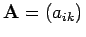
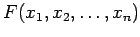
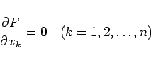
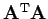
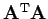

Inhalt Index DeskTop Bronstein

 Numerische Mathematik Numerische Lösung von Gleichungssystemen Lineare Gleichungssysteme Orthogonalisierungsverfahren
Numerische Mathematik Numerische Lösung von Gleichungssystemen Lineare Gleichungssysteme Orthogonalisierungsverfahren


Gegeben sei das überbestimmte lineare Gleichungssystem
in Matrixschreibweise
Die Koeffizientenmatrix , die vom Typ (m,n) ist, habe den Maximalrang  , d.h., ihre Spalten sind linear unabhängig. Da ein überbestimmtes lineares Gleichungssystem in der Regel keine Lösung hat, geht man von (19.37) zu den sogenannten Fehlergleichungen
, d.h., ihre Spalten sind linear unabhängig. Da ein überbestimmtes lineares Gleichungssystem in der Regel keine Lösung hat, geht man von (19.37) zu den sogenannten Fehlergleichungen
mit den Residuen ri über und verlangt, daß die Summe der Quadrate der Residuen minimal wird:
Die Aufgabe (19.40) wird als lineare Ausgleichsaufgabe oder lineares Quadratmittelproblem bezeichnet. Die notwendigen Bedingungen dafür, daß die Fehlerquadratsumme  ein relatives Minimum annimmt, lauten
|  | (19.41) |
und führen auf das lineare Gleichungssystem
Der Übergang von (19.38) zu (19.42) wird als GAUSS-Transformation bezeichnet, da das System (19.42) durch Anwendung der GAUSSschen Fehlerquadratmethode aus (19.38) entstanden ist. Da für  Maximalrang vorausgesetzt wurde, ist  eine positiv definite Matrix vom Typ
Maximalrang vorausgesetzt wurde, ist  eine positiv definite Matrix vom Typ  , und die sogenannten Normalgleichungen (19.42) können mit Hilfe des CHOLESKY-Verfahrens numerisch gelöst werden.
, und die sogenannten Normalgleichungen (19.42) können mit Hilfe des CHOLESKY-Verfahrens numerisch gelöst werden.
Bei der Lösung des Normalgleichungssystems (19.42) können numerische Probleme auftreten, wenn die Konditionszahl (s. Lit. 19.26) der Matrix sehr groß ist. Die Lösung  kann dann große relative Fehler haben. Deshalb ist es numerisch günstiger, zur Lösung linearer Ausgleichsaufgaben Orthogonalisierungsverfahren zu verwenden.
kann dann große relative Fehler haben. Deshalb ist es numerisch günstiger, zur Lösung linearer Ausgleichsaufgaben Orthogonalisierungsverfahren zu verwenden.